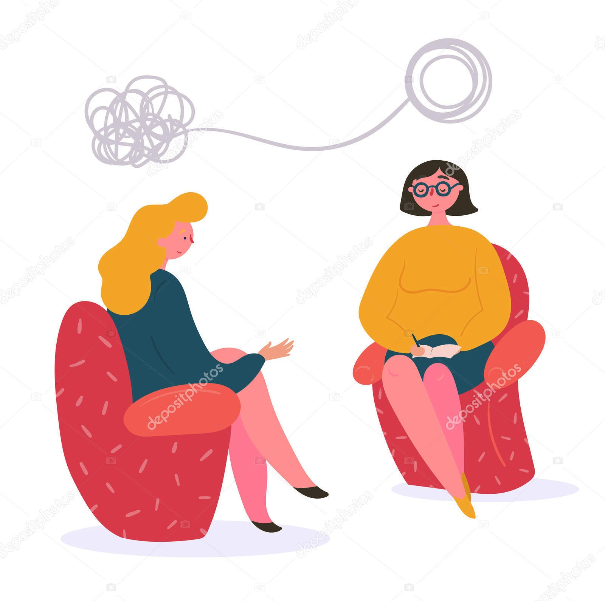

Our Therapeutic Services
We offer a range of specialized services tailored to your unique relational needs, including:
- Couples Counseling: For partners seeking to resolve conflict, improve communication, and deepen intimacy.
- Family Therapy: Address family-wide challenges and create a more harmonious home environment.
- Pre-Marital Counseling: Build a strong foundation for your marriage by discussing key topics before you say "I do."
- Individual Relationship Counseling: Focus on your personal relationship patterns, attachment styles, and individual growth.